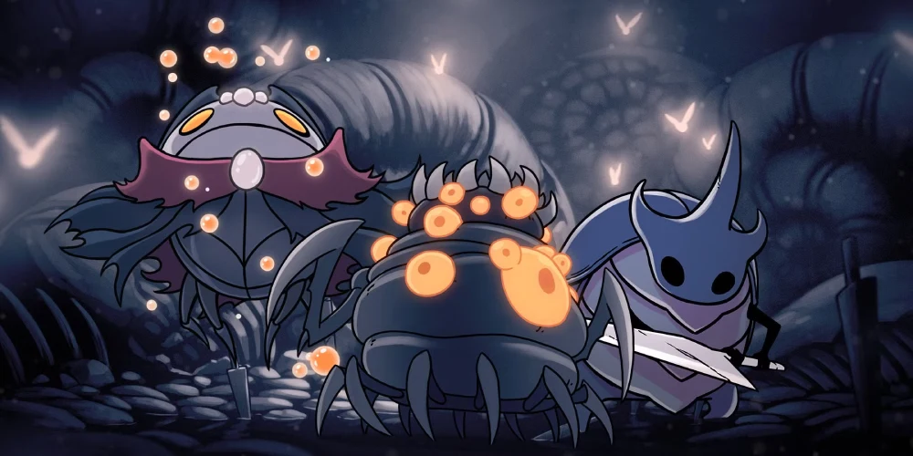
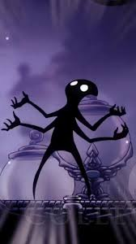
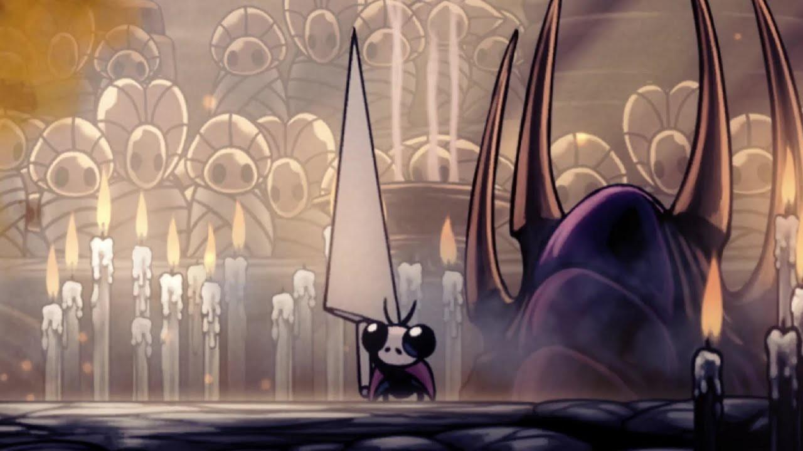
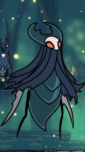

Jefes Secretos y Desafíos Ocultos

Muchos de los enemigos más valiosos de Hallownest no se encuentran en el camino principal. Están protegidos por llaves raras, paredes rompibles o acertijos de lore. Derrotarlos no solo otorga logros, sino que desbloquea habilidades, amuletos y el rescate de personajes fundamentales.
El Coleccionista
Oculto en la Torre del Amor dentro de la Ciudad de Lágrimas. Este ser de vacío está obsesionado con preservar la "belleza" de Hallownest capturando a las Larvas (Grubs) en frascos de cristal.
Requisito de acceso:
Necesitas la Llave del Amor, que se encuentra en el Límite del Reino, cerca de los Canales Reales.
Recompensa: Al derrotarlo, obtendrás el Mapa del Coleccionista, que revela la ubicación de todas las Larvas restantes en tu mapa.


Nosk: El Impostor
Uno de los encuentros más aterradores. Nosk atrae a sus víctimas imitando la apariencia de sus seres queridos o, en nuestro caso, la forma del propio Caballero.
Se esconde tras una pared rompible en Nido Profundo. La pelea es frenética, con Nosk corriendo por las paredes y el techo, lanzando chorros de infección.
Valioso: Al vencerlo obtendrás un Mineral Pálido, esencial para mejorar tu aguijón al máximo nivel.
Gran Maestro de Aguijones Sly
¿Quién diría que el pequeño tendero de Bocasucia ocultaba tal poder? Sly es el legendario maestro que enseñó a los tres Hermanos Oro, Mato y Sheo.

Estilo de Combate
A pesar de su tamaño, maneja un aguijón gigante. Sus ataques tienen un alcance masivo y es el jefe más rápido del juego en términos de recuperación. Se encuentra exclusivamente en el Panteón del Sabio.
El Honor del Maestro
Derrotarlo es la prueba máxima para cualquier espadachín. Te otorga el reconocimiento de los sabios y acceso a los desafíos finales de Godhome.
Señor de los Traidores
El cuarto Señor de las Mantis que aceptó la Infección para obtener más poder. Fue desterrado a los Jardines de la Reina. Esta pelea es vital para el lore, ya que aquí es donde la guerrera Cloth puede encontrar su final heroico ayudándote.
